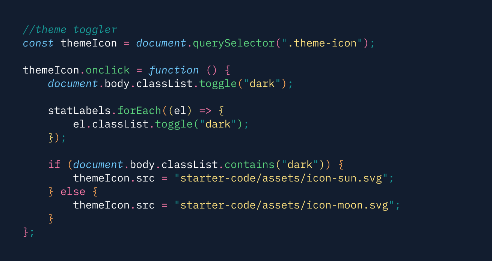

Github user API
To get the GitHub user information, I requested data using the following API
url: https://api.github.com/users
After capturing the user's input, I used Fetch( ) to request and parse the returned JSON data. I
experimented with Postman to test inputs and get a better understanding of the data structure. This
project helped me solidify my knowledge on the principles of REST APIs and how to modify HTTP requests.
Theming:
Dark + light mode
CSS custom variables were created to give users the ability to toggle between light and dark themes.
When
the user clicks on the theme icon, CSS classes would switch between states to render the web app.
For
future projects, I'd like to incorporate default theme settings so that the app renders based on
the
user's display settings.

Responsive layout
The layout was created primarily with CSS Flexbox and a mobile-first design perspective. Media queries
adjusted the layout, sizing and placement of elements based on the user's viewing device. I leveraged
the CSS Grid property to rearrange the social media links from a list to a table format on a desktop
layout.
Using a design system
The design specs and functionality requirements were provided as part of a web challenge from Frontend
Mentor. I used Figma to inspect the design system and implement layouts, colors, typography, and error
states.
What I learned + next steps
Using documentation to write down my thought process as pseudo-code helped me conceptually breakdown
problems into smaller, more manageable chunks.
For next steps, I see opportunities to incorporate more ES6+ conventions and refactor my code to stay
consistent with the DRY (Don't Repeat Yourself) principle.